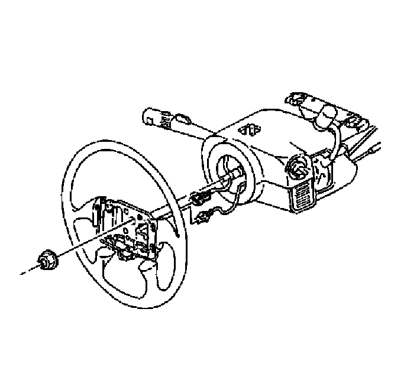
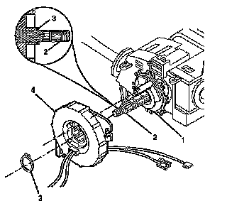
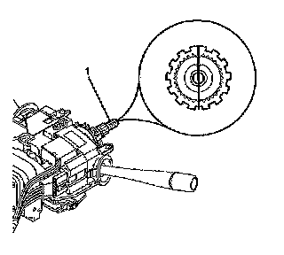
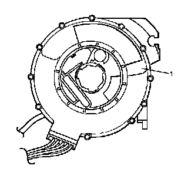
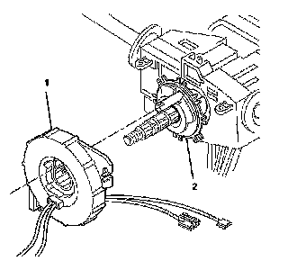

Inflatable Restraint Steering Wheel Module Coil Replacement
INFLATABLE RESTRAINT STEERING WHEEL MODULE COIL REPLACEMENT
TOOLS REQUIRED
J 42640 Steering Column Anti Rotation Pin
REMOVAL PROCEDURE

1. CAUTION: Refer to SIR Caution.
Disable the SIR System. Refer to SIR Disabling and Enabling.
2. NOTE: The wheels of the vehicle must be straight ahead and the steering column in the LOCK position before disconnecting the steering column or intermediate shaft from the steering gear. Failure to do so will cause the SIR coil assembly to become uncentered, which may cause damage to the coil assembly.
Verify the following before removing the SIR coil:
- The wheels on the vehicle are straight ahead.
- That J 42640 is installed or the ignition switch is in the LOCK position.
3. Remove the steering wheel from the steering shaft.
4. Remove the steering column trim covers.

5. Remove the wire harness straps from the steering wheel column wire harness.
6. Remove the retaining ring (3).
7. Remove the SIR coil (4) from the steering shaft.
8. If replacing, discard the SIR coil.
INSTALLATION PROCEDURE

1. NOTE:
- The new SIR coil assembly will be centered. Improper alignment of the SIR coil assembly may damage the unit, causing an inflatable restraint malfunction.
- The wheels of the vehicle must be straight ahead and the steering column in the LOCK position before disconnecting the steering column or intermediate shaft from the steering gear. Failure to do so will cause the SIR coil assembly to become uncentered, which may cause damage to the coil assembly.
Verify the following:
- The wheels on the vehicle are straight ahead.
- That J 42640 is installed or the ignition switch is in the LOCK position.

2. IMPORTANT: Do not remove the centering tab from the new SIR coil until the installation is complete. If the SIR coil does not come with a centering tab, you must center the SIR coil.
If reusing the existing coil it MUST be centered, refer to Inflatable Restraint Steering Wheel Module Coil Centering.

3. Align the SIR coil assembly (1) with the horn tower on the turn signal cancel cam assembly (2).
4. Slide the SIR coil (4) onto the steering shaft assembly (2).
5. Firmly seat the retaining ring (3) into the groove on the steering shaft assembly (2).
6. Remove and discard the centering tab from the new SIR coil (4).
7. Install the steering column trim covers.
8. Install the steering wheel.
9. Enable the SIR system. Refer to SIR Disabling and Enabling.